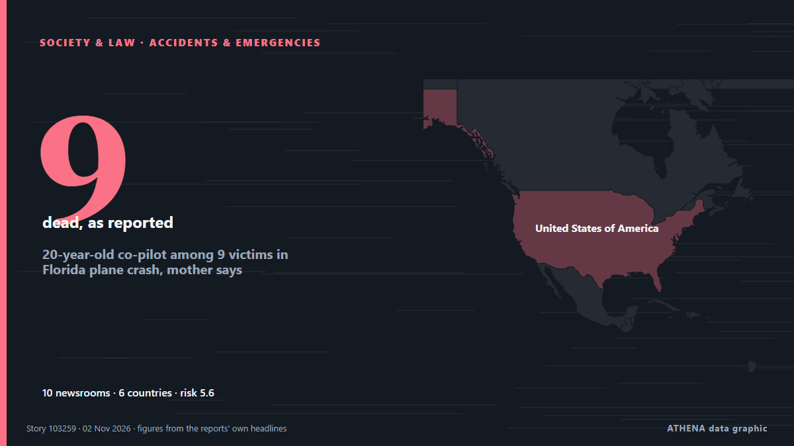

Accidentes y emergencias
PatrocinadoPresentado por  Cybernetics and Artificial Intelligence Lab Welcome to the Cybernetics and Artificial Intelligence Laboratory, established at the Department of Business Administration of the National
Cybernetics and Artificial Intelligence Lab Welcome to the Cybernetics and Artificial Intelligence Laboratory, established at the Department of Business Administration of the National
| 20 oct | 0 |
|---|---|
| 21 oct | 0 |
| 22 oct | 0 |
| 23 oct | 1 |
| 24 oct | 0 |
| 25 oct | 1 |
| 26 oct | 0 |
| 27 oct | 0 |
| 28 oct | 2 |
| 29 oct | 3 |
| 30 oct | 5 |
| 31 oct | 4 |
| 1 nov | 5 |
| 2 nov | 3 |
Los titulares se muestran en inglés, tal como se publicaron.

20-year-old co-pilot among 9 victims in Florida plane crash, mother says
U.S. federal officials are investigating after a business jet crashed into a South Florida neighbourhood on Sunday and erupted into a ball of flames, killing all nine people on board and leaving a… de CBC News (alternative feed)
Plaka Explosion: How a Copper Pipe Theft Led to Six Deaths
Security footage has helped investigators reconstruct the movements of three suspects accused of stealing a gas pipe from an Athens building, triggering a leak that led to a devastating explosion… de to vima
Five teenagers stabbed at Halloween party
Five teenagers have been seriously injured after being stabbed at a Halloween party, police have said. de MyJoyOnline
Russian attack sparks fire at transport infrastructure facility in Kropyvnytskyi
Firefighters in Kropyvnytskyi have extinguished a fire at a transport infrastructure facility caused by a Russian attack. de Ukrinform (English)
2 foreign nationals die of suspected electrocution in Bengaluru 5-star hotel’s pool
On Friday evening, two foreign nationals from Germany and Slovakia died from suspected electrocution in a hotel swimming pool. de Times of India
One dead, three rescued in Lagos building collapse
The Lagos State Emergency Management Agency (LASEMA) has confirmed one death and the rescue of three adult males following the collapse of a two-storey building under construction in Fadeyi, Lagos. de Vanguard
Nigerian families and survivors seek justice over miners' deaths
MINNA, Nigeria, Oct 30 - Families of 37 artisinal miners who died in custody in Nigeria want swift justice and the return of property seized during their arrest, saying no financial compensation will… de The Straits Times
Multiple shootings on Halloween leaves 4 dead, 15 injured
At least 3 victims remain in critical condition following shooting at Fairfield mall, as police search for suspect. de Express Tribune
At least 68 people die in major Spanish train crash
The collision brings back memories of the January train crash in Adamuz, which killed 46 people. de Politico Europe
Strike at industrial complex in Saudi Arabia's Dammam causes huge fire: Iranian state media
TEHRAN, Nov. 01 (MNA) – A major fire erupted at an industrial facility in Dammam, eastern Saudi Arabia, following a reported Yemeni attack. de Mehr News (English)
Spanish village gathers for memorial Mass for train crash victims
Investigators are looking into the cause of one of Europe's deadliest rail disasters this century. de CNA (Channel NewsAsia)
PICTURED: ‘Hero’ driver, 36, of doomed Renfe train in Toledo rail disaster whose last-minute actions ‘saved hundreds of lives’
His heartbroken family say he hit the emergency brake in the final moments before the collision, saving the lives of hundreds of passengers. de The Olive Press
Egypt minibus crash outside Cairo kills 10, injures 24
The accident was the latest in a string of fatal road incidents in Egypt, where traffic accidents remain a persistent public safety challenge. de Free Malaysia Today
Hong Kong has released the full report on Tai Po fire tragedy. Here’s all you need to know
We have put together 10 stories from our coverage on the full report of the Wang Fuk Court fire, released almost a year since the tragedy claimed 168 lives. de South China Morning Post
India helicopter crash in Himalayas kills 6
Police said efforts were under way to recover the bodies from the remote crash site, while the cause of the accident remained unknown. de Free Malaysia Today
Horror midair crash in Oregon kills UK student pilot as two helicopters collide
A student pilot from the UK is among three people killed after two helicopters collided in Oregon, United States. de Chronicle Live (Newcastle)
‘Trust in high-speed rail shattered,’ says Spanish premier after deadly accident
At least 69 died Wednesday in Spain’s 2nd major high-speed rail tragedy this year. de Anadolu Agency (English)
Traffic Control Errors Caused Spain’s Deadly Train Crash, Official Says
The transport minister said a judge would investigate controllers’ actions, including authorizing a train to proceed at high speed though another was stalled in front of it. de The New York Times (World)
A helicopter with the EU force in Bosnia crashes, reportedly killing 3 and injuring 12
A Italian helicopter of the European Union peacekeeping force in Bosnia has crashed in the country’s north. de ABC News (International)